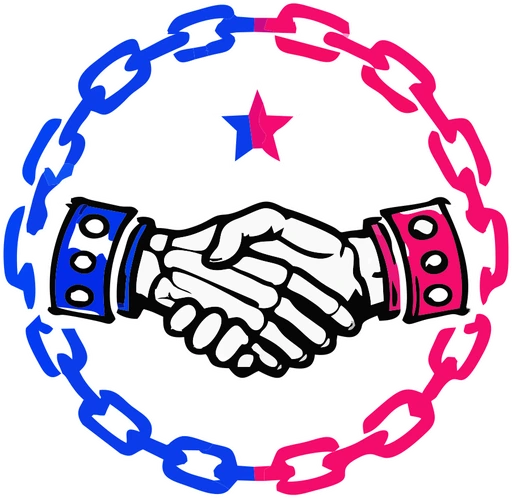

Presencia digital
Un perfil público con identidad, descripción, contacto y ubicación.

Aliados Fantasma Red local de negocios
COMERCIO LOCAL + PRESENCIA DIGITAL
Aliados Fantasma transforma la información de cada comercio en un perfil digital fácil de compartir, consultar y actualizar.
Descripción, contacto, ubicación, promociones y toda la información que tus clientes necesitan.
¿QUÉ ES ALIADOS FANTASMA?
No reemplaza las redes sociales ni Google Maps. Las reúne en una presentación clara para que cada negocio pueda compartir un solo enlace profesional.
Un perfil público con identidad, descripción, contacto y ubicación.
Un solo enlace para enviar por WhatsApp, redes sociales o código QR.
Los cambios pueden revisarse antes de publicarse para mantener perfiles confiables.
Los negocios dejan de estar aislados y comienzan a formar una comunidad local.
EXPLORA LA RED
Perfiles activos cargados desde la plataforma.
PROCESO SIMPLE
Recopilamos nombre, giro, descripción, contacto, ubicación e identidad visual.
Organizamos la información en una página clara, moderna y adaptable a celular.
Úsalo en redes, WhatsApp, anuncios impresos o un código QR dentro de tu local.
PARA LOCATARIOS Y EMPRENDEDORES
Esta demo busca validar una plataforma creada para comercios locales: sencilla, accesible y administrada con acompañamiento.
Cuéntanos qué vendes o qué servicio ofreces y te mostramos cómo podría verse tu perfil.
Hablar por WhatsApp No se publica información sin autorización del negocio.